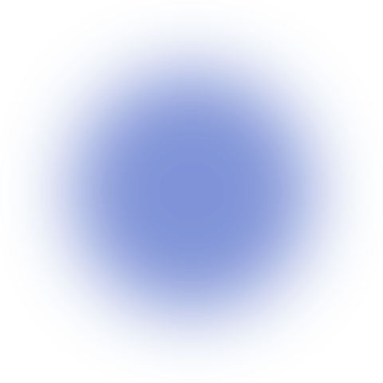
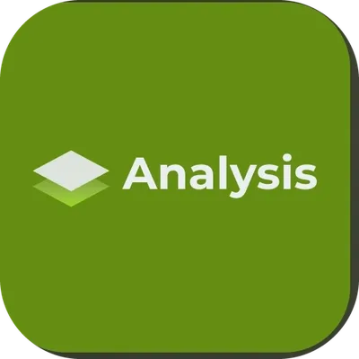
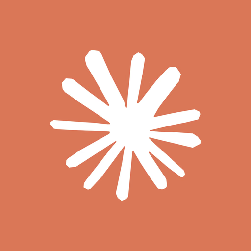
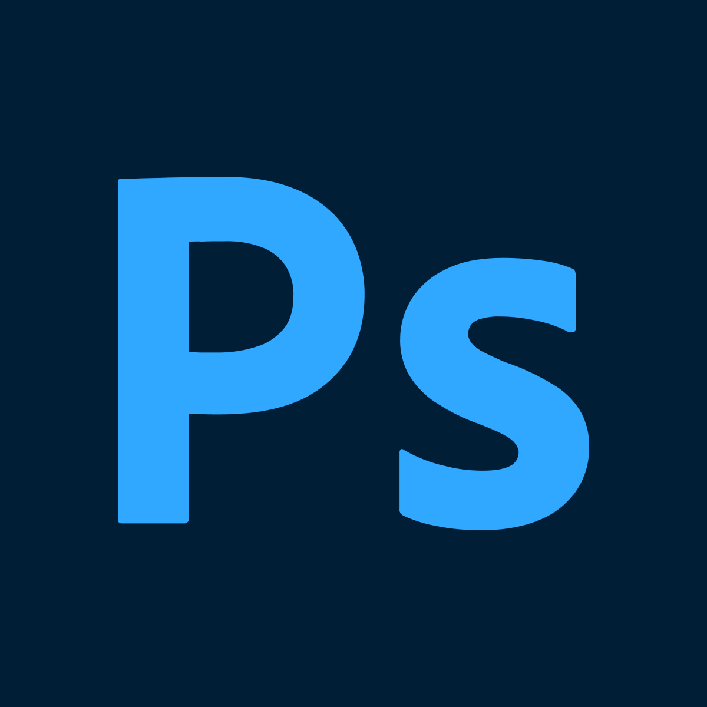
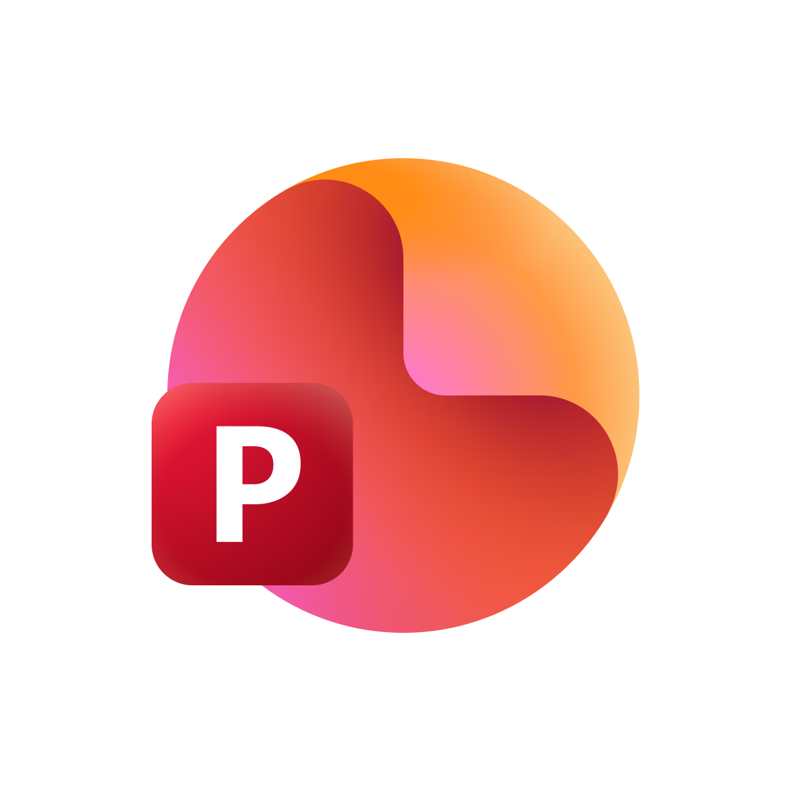
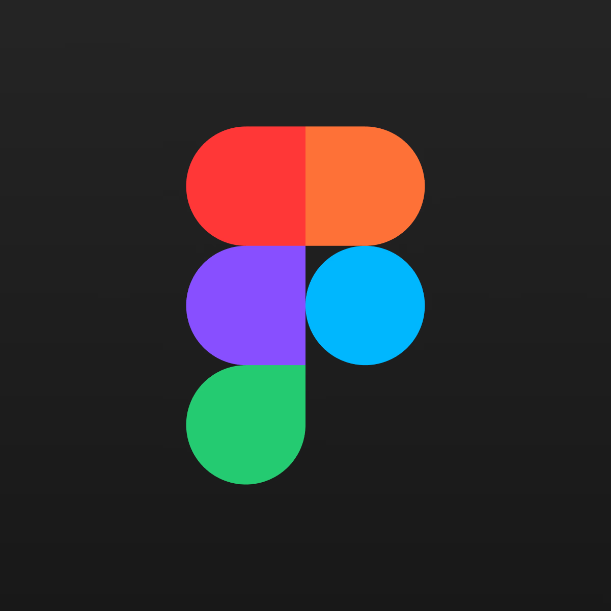
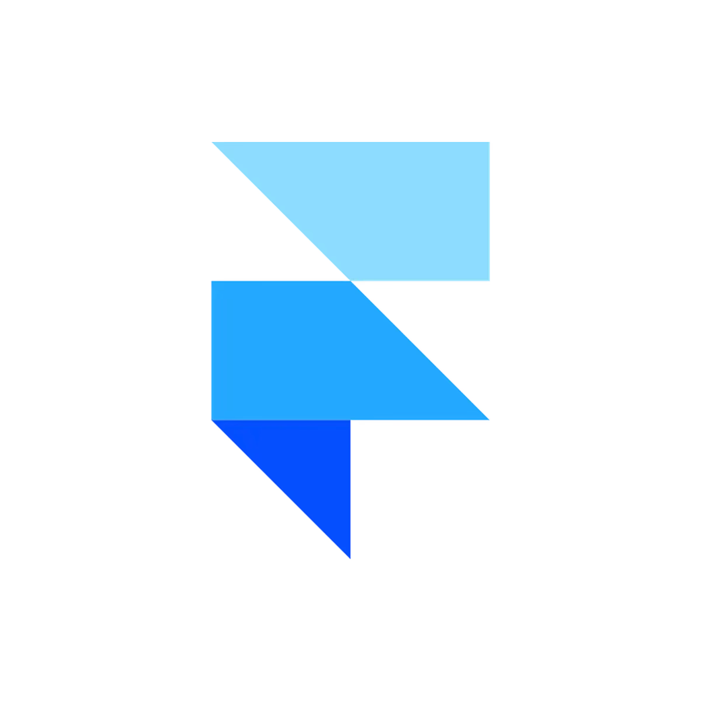

I design
workflows.
8년차 UI/UX 디자이너.
데이터·운영 서비스와 게임 IP 플랫폼의 시스템과 경험을 설계합니다. Currently at Neople.
About me
복잡한 정보와 업무 흐름을, 사용자가 쉽게 이해하고 예측할 수 있는 구조로 정리합니다.
디자인 에이전시에서 커머스 쇼핑몰, 교육 플랫폼, 기업 브랜드 사이트를 만들었고, 지금은 네오플에서 1인 디자이너로 초기 기획부터 UX·UI 디자인, 스타일 구현, QA까지 맡고 있습니다.
최근에는 Figma와 AI 코딩 도구를 연결해 디자인 시스템이 실제 화면으로 빠르게 구현되는 방식을 실험하고 있습니다. 디자이너와 개발자가 더 일관되게 협업할 수 있는 구조를 만드는 것이 목표입니다.
↗Read moreSelected work. 사용자가 매일 여는 운영 화면을 설계했습니다.
업무 요청 시스템부터 분석 대시보드, IP CMS까지 네오플의 사내 플랫폼과 운영 도구를 설계했습니다.
카드를 눌러 각 프로젝트의 문제 정의, 정보 구조, 화면 설계 과정을 확인해 보세요.
TASK 업무 요청
시스템
업무 탐색 구조와 요청·진행 확인 흐름을 다시 설계했습니다.




Neople Developers
개발자 센터
디자인부터 AI 기반 구현까지 리뉴얼하고 있습니다.
DNF CMS
콘텐츠 관리 시스템
홈페이지 콘텐츠를 운영하는 관리자 화면을 설계했습니다.
Media Insight
분석 대시보드
흩어진 미디어 지표를 읽기 쉬운 분석 화면으로 정리했습니다.

사이퍼즈
프로모션 배너
시즌 이벤트마다 메인 · 서브 배너를 제작하고 있습니다.
화장실 찾기
하이브리드 앱
AI 도구로 기획·설계·개발까지 직접 진행하고 있습니다.
화장품 브랜드
기획
로고·패키지·웹까지 브랜드 전체를 기획하고 있습니다.
제가 쓰는 도구와

FramerClaude



만드는 화면.
Figma로 설계하고, 디자인 시스템을 코드와 AI 개발 환경까지 연결합니다. WebStorm과 GitHub에서 구현 결과를 직접 다듬고, Adobe 도구로 비주얼 에셋을 마무리합니다.
↗See how I workPrevious work
- 프리스비 쇼핑몰 리뉴얼언플러 · E-commerce, UI Renewal, Web Design2021.10 - 2022.01
- 스마트올 중학 플랫폼 · 웹사이트 구축언플러 · EdTech Platform, UX/UI Design, Web2020.08 - 2020.12
- OCO 쇼핑몰 구축 및 운영언플러 · E-commerce, UI Design, Operation2019.10 - 2021.12
- 티빙몰 쇼핑몰 운영언플러 · E-commerce, Event Banner, Promotion2019.10 - 2021.12
- 제네시스 내비게이션 가이드아메바 · Navigation GUI Guide, UI Components2019.08 - 2019.10
Side projects
- 화장실 찾기 하이브리드 앱AI 도구로 직접 기획 · 설계 · 개발, API 발급In progress2026 - Now
- 화장품 웹사이트 구축WordPress, Tailwind, Claude Code로 구축In progress2025 - Now